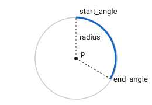
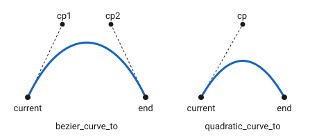

Current Path
Overview
The canvas holds one path at a time, its current path. The calls below
build geometry into it, and fill or stroke paints and then clears it.
This is the same geometry the path class
describes, expressed as a sequence of calls rather than as an object. Build
it here when the shape changes on every draw; build a path when the shape
is fixed and worth keeping, then hand it over with add_path.
fill / stroke
Paints the current path, filled or outlined.
Expressions
// variant 1
cnv.fill()
cnv.stroke()
// variant 2
cnv.fill_preserve()
cnv.stroke_preserve()Semantics
-
Fills the current path with the current fill style, or strokes it with the current stroke style. The path is consumed: the canvas begins a new one afterwards.
-
The same, but the path is left in place so it can be painted again. This is how a shape is given both a fill and an outline.
cnv.fill_preserve(); // fill, keeping the path
cnv.stroke(); // then outline the same pathmove_to / line_to
arc

Adds an arc of a circle, given its centre.
Notation
p-
Instance of
point, the centre x,y,radius-
float start_angle,end_angle-
float, angles in radians ccw-
bool
quadratic_curve_to / bezier_curve_to

Adds a Bézier curve from the current point.
Expressions
// variant 1
cnv.quadratic_curve_to(cp, end)
cnv.quadratic_curve_to(cpx, cpy, x, y)
// variant 2
cnv.bezier_curve_to(cp1, cp2, end)
cnv.bezier_curve_to(cp1x, cp1y, cp2x, cp2y, x, y)Semantics
-
Adds a quadratic Bézier curve to
end, shaped by the single control pointcp. -
Adds a cubic Bézier curve to
end, shaped by the two control pointscp1andcp2. -
Both start at the current point, which the curve leaves in the direction of the first control point.
endbecomes the new current point.